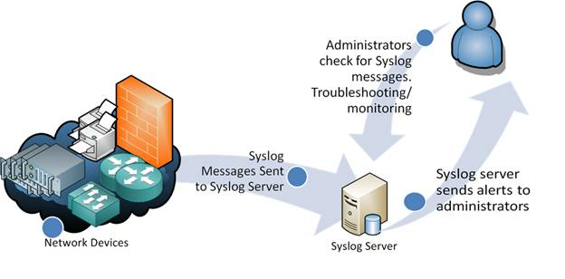
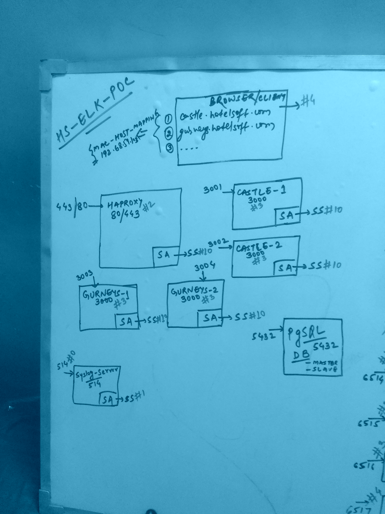
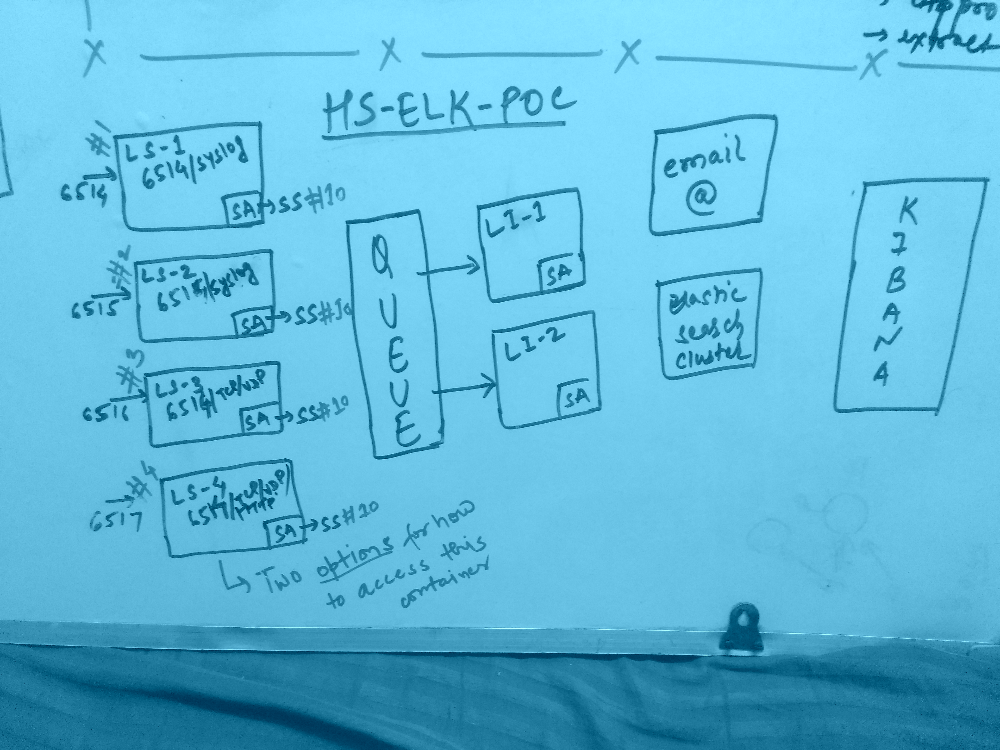

HS ELK POC

Topics of Contents
- Existing Handling in “RZR” Application
- Syslog
- What is Syslog?
- Syslog Formats And Specs
- Syslog Downsides!!
- What is ELK?
- Sources of logs in our application/deployment
- HS-Remote Deployment Diagram -
Not Available - HS-ELK-POC Deployment Diagram
- HS-ELK-POC Demo
- Dockerfiles Project Overview
- Image & Containers And Their Configurations
- Pending/To-Be-Decided
- Hawkular in very brief
- Next Steps
Existing Handling
– We use bunyan for logging server side logs.
– Bunyan is great and can be configured for persistence and different destinations for different log levels.
– Currently the logs in our application are not stored/presisted.
– We mostly view them on our command line interface.
What is Syslog?

- A protocol supported by a wide range of devices and can be used to log different types of events.
- Some of the examples would be routers, switches, *nix servers, firewalls, some printers, and even web-servers like Apache.
- Windows-based servers don’t support Syslog natively, but a large number of third-party tools make it easy to collect Windows Event Log or IIS data and forward it to a Syslog server.
Syslog Format And Specs
<38>Sep 22 00:08:52 ashwini.local authServer[253]: An anonymous user from IP address 123.456.78.90 just tried to login into our system.
{
priority: 38,
facilityCode: 4,
facility: 'auth',
severityCode: 6,
severity: 'info',
time: 'Sep 22 00:08:52',
host: 'ashwini.local',
process: 'authServer',
pid: 253,
message: 'An anonymous user from IP address 123.456.78.90 just loged into our system.'
}
Find Syslog Facility/Severity codes here.
Syslog Downsides!!
- The problem of consistency.
- RFC3164 and RFC5424 and ...
-
UnReliable Delivery
- The protocol is Simplex communication with no acknowledgement.
- Use of UDP has been declared obsolete by RFC 5424 which states implementation must support Transport Layer Security (TLS) via the Transmission Control Protocol (TCP).
- Syslog over TLS uses port number 6514.
-
Security challenges
- There is no authentication on syslog messages.
- It could be possible for one machine to impersonate another machine and send bogus log events.
- Windows-based servers don’t support Syslog natively.
What is ELK?
– By combining the massively popular Elasticsearch, Logstash and Kibana, Elasticsearch Inc has created an end-to-end stack that delivers actionable insights in real time from almost any type of structured and unstructured data source.
– The Elasticsearch ELK stack makes searching and analyzing data easier than ever before.
– Thousands of organizations worldwide use these products for an endless variety of business critical functions.
– Logstash for centralized logging, log enrichment and parsing
– Elasticsearch for deep search and data analytics
– Kibana for powerful and beautiful data visualizations
Sources of logs in our application/deployment
Browser
Haproxy
docker containers
rzr applications
Spydr application
Library Options (Skip It - Not Needed)
- mcavage/node-bunyan-syslog
– bunyan-syslog is a stream for bunyan that consumes raw records from bunyan and sends them to a syslog server. - generic syslog
– schamane/node-syslog
– peebles/docker-logger
– vdemedes/syslog-parse
– strongloop/modern-syslog - rconsole to unify the console and the syslog
– VRMink/syslog-console - rsyslog and syslog-ng
– https://github.com/balabit/syslog-ng - Don’t use the inbuilt syslog and post the messages yourself to the remote syslogd
– https://github.com/papertrail/remote_syslog2 - https://github.com/qualitybath/bunyan-slack
HS-ELK-POC-DD

HS-ELK-POC-DD contd…

HS-ELK-POC Demo (Requirements)
- Requirenemt
- MAC Ip config
-
cat /etc/hosts127.0.0.1 localhost 255.255.255.255 broadcasthost ::1 localhost 192.168.59.103 castle.hotelsoft.com 192.168.59.103 gurneys.hotelsoft.com 192.168.59.103 hs.elk.poc
-
Note: We will come to the project structure, image build, container creation and volume/port mapping later.
HS-ELK-POC Demo (Starting Containers)
-
Starting the containers
$ docker start hs-syslogd hs-elastic hs-logstash-for-syslog-agents hs-logstash-for-haproxy hs-logstash-for-rzr-apps hs-logstash-for-rzr-browsers hs-db-pg hs-app-castle1 hs-app-castle2 hs-app-gurneys1 hs-app-gurneys2 hs-haproxy hs-kibana hs-hawkular -
sequence matters=> hs-syslogd => hs-elastic => hs-logstash-for-syslog-agents hs-logstash-for-haproxy hs-logstash-for-rzr-apps hs-logstash-for-rzr-browsers => hs-db-pg => hs-app-castle1 hs-app-castle2 hs-app-gurneys1 hs-app-gurneys2 => hs-haproxy => hs-kibana => hs-hawkular
HS-ELK-POC Demo (Starting Services)
- Syslogd, ES, Logstash etc. are all by default started. The pending automation (??) are started manually as of now.
-
Starting the node-server on castle1, castle2, gurneys1 and gurneys2.
$ docker exec -it hs-app-castle1 fish cd /data/castle-rzr-code-base1 env DEBUG='loopback:*' node server/server.js & # Similarly castle2 $ docker exec -it hs-app-gurneys1 fish cd /data/gurneys-rzr-code-base1 env DEBUG='loopback:*' node server/server.js & # Similarly gurneys2 -
Starting the ha-proxy service
$ /etc/init.d/haproxy restart
HS-ELK-POC Demo (Log Visualization)
curl http://192.168.59.103:9200/_cat/indices\?v- View the Kibana UI
- in the mac browser hit the castle and gurneys url and then see the changes in the kibana UI
Note: Kibana is very powerful when it comes to Visualization of the logs/data and I have not covered it completely in this demo.
Dockerfiles Project Overview
masteralready contains the folders for the- base-image (hotelsoft-base)
- load-balancer (hotelsoft-haproxy)
- keycloak (hotelsoft-security)
- node-application (hotelsoft-app)
- pg-database (hotelsoftdb-pgpool / hotelsoftdb / hotelsoftdb-slave)
- hotelsoft-extracts / hotelsoft-tproxy / baseimage-utopic???
elkovermaster
dockerfiles
├── hs-base
│ ├── syslog-ng-addon-confs
│ └── logstash-syslog.conf
│ └── syslogd.conf
├── hs-syslogd
│ ├── logging-addon-confs
│ └── syslogd-server.conf
├── hs-elastic
├── hs-logstash
│ ├── logging-addon-confs
│ └── logstash-all.conf #Alternative option
│ └── logstash-browser.conf
│ └── logstash-haproxy.conf
│ └── logstash-node-app.conf
│ └── logstash-syslog-agents.conf
├── hs-app
├── hs-haproxy
│ └── haproxy.cfg
├── hs-kibana
├── hs-hawkular # Incomplete
Image & Containers and their configuration
-
Code Checkout and Directory Mapping
$ cd docker-mapped-directory $ git clone git@github.com:hotelsoft/hotelsoftrzr.git --branch elk --single-branch ./elk $ cp -R ./elk/ ./castle-rzr-code-base1 $ cp -R ./elk/ ./castle-rzr-code-base2 $ cp -R ./elk/ ./gurneys-rzr-code-base1 $ cp -R ./elk/ ./gurneys-rzr-code-base2 $ mkdir logstash-data $ mkdir syslogd-data
Image & Containers and their configuration…
-
Building Images
$ cd hs-elastic/ $ docker build -t hs/elastic . - Creating Containers
- Volume Mapping
-
Port Mapping
$ docker create -p 6514:6514 -p 6514:6514/udp -it -v /Users/ashwinikumar/work/docker-mapped-directory/logstash-data:/data/logstash-data -h logstashForSyslogAgents --name hs-logstash-for-syslog-agents hs/logstash:latest $ docker create -p 80:80 -p 443:443 -p 22002:22002 -it -h haproxy-docker-host --name hs-haproxy hs/haproxy:latest
- List of Images
- List of Containers
Pendings and To Be Decided
- Log-format/facilities/severities of the different logs
– Browser sending logs
– Server side logs
– Containers peripheral logs
– Haproxy logs - Should we have a unique id with every api requests in the request scope
- How does the browser send it’s logs
– To haproxy / Logstash
– Using TCP/HTTP - Should we make the code checkout and port/db configuration as part of the dockerfile/shell script for automation
– configure to take the git update by itself always production or from env variable
– configure the data source to read from the environment variable
– configure the .hotelsoftrc to automatically point to the correct database schema - Email notification for the critical errors in the prod-rzr-app.
Hawkular in brief
Next Steps
- Implement the log-formats
- Automate the rzr-app deployment/configuration
- Configure Logstash/Kibana to better format our custom messages and show the events in a better visual ways.
- Investigate Hawkular more to make it suit the razor application, If needed
Thank You :-)
Review link of the PPT => https://github.com/dopeddude/elk-poc-ppt
PPT - Personal Pending Tasks
– Go through the links inside the docker-elk folder bookmark in the chrome
– Strong Loop Debugging
– loopback customization
– use the config.js in the server folder to customise REST error handling
– Exclude stack traces from HTTP responses
– Redirect the loopback queries to some file and then send the file content to the syslog-server-container
– https://docs.strongloop.com/display/public/LB/Versioning+your+API
– https://docs.strongloop.com/display/SLC/Logging
– https://strongloop.com/strongblog/node-js-splunk-logging/
– Hawkular for monitoring
– drone – jenkins for CI/CD
– logging - slack/phone/emails integration
– adding relevant users for all containers like logstash/elastic users just like we have pg/app users with proper
privileges
– weave setup
– Authentication
configuring / enabling the logs on the keyclock for authentication